全文翻译
尽管扩散模型具有令人印象深刻的生成能力，但现有的基于扩散模型的风格迁移方法要么需要耗时的推理阶段优化（如风格的微调或文本反转），要么未能充分利用大规模扩散模型的生成能力。为解决这些问题，我们提出了一种基于预训练大规模扩散模型的无需任何优化过程的新型艺术风格迁移方法。具体而言，我们通过模仿交叉注意力机制的工作方式，对自注意力层的特征进行操作：在生成过程中，将内容的键（key）和值（value）替换为风格图像的对应特征。这种方法为风格迁移提供了几个理想特性：1）通过将相似风格传递到相似图像块来保留内容结构；2）基于内容与风格图像之间局部纹理（如边缘）的相似性进行风格传递。此外，我们引入查询保留和注意力温度缩放来缓解原始内容结构被破坏的问题，并提出初始潜在自适应实例归一化（AdaIN）来处理颜色不和谐（风格颜色传递失败）的问题。实验结果表明，我们的方法在传统和基于扩散的风格迁移基准上均超越了现有技术。代码可在https://github.com/jiwoogit/StyleID 获取。
1. 引言
扩散模型（DMs）的最新进展在各种生成应用领域取得了突破，例如文本到图像合成[32, 36, 38]以及图像或视频编辑[3, 5, 7, 15, 20, 44, 51]。其中的一些成果也被应用于风格迁移任务[11, 19, 48, 50, 56]；即在给定风格图像和内容图像的情况下，修改内容图像的风格，使其具有给定的风格。
基于扩散模型的风格迁移通用方法利用了预训练扩散模型的生成能力。其中一些工作侧重于显式地分离风格和内容，以实现可解释和可控的风格迁移[48]，或者将风格图像反演到大规模文本到图像扩散模型的文本潜在空间中[56]。然而，这些方法还需要对每个风格图像进行基于梯度的优化微调以及文本反演[37]，这非常耗时。DiffStyle[19]提出了一种无需训练的风格迁移方法，不存在上述问题，但它很难应用于潜在扩散模型[36]。而潜在扩散模型被广泛用于训练像Stable Diffusion[36]这样的大规模文本到图像扩散模型，这就使得用户无法利用大规模模型卓越的生成能力。
在本文中，我们专注于将无需训练的风格迁移方法扩展到大规模预训练扩散模型的应用中。我们从基于大规模扩散模型的图像到图像转换的最新进展中得到启发，这些研究揭示了注意力层在图像编辑中的能力。 值得注意的是，即插即用（Plug-and-play）[44]方法表明，残差块和自注意力（SA）的注意力图决定了生成图像的空间布局。同时，“Prompt-to-Prompt”方法通过替换从文本提示中获得的交叉注意力（CA）的键和值，在保持原始注意力图的情况下对图像进行局部编辑。这些研究都表明，注意力图决定了空间布局，而交叉注意力的键和值调整了填充的内容。
受上述方法的启发，我们提出操纵自注意力层是一种有效的风格迁移方式（见图1）。具体来说，与交叉注意力类似，我们替换自注意力的键和值，并观察到生成的图像在视觉上仍然合理，并且自然地将替换图像的元素融入到原始图像中。这一观察促使我们提出一种基于自注意力的风格迁移技术，该技术将特定图像的风格（纹理）与不同图像的内容（语义和空间布局）相结合。此外，我们强调自注意力层在风格迁移中具有理想的特性。首先，如图2（a）所示，在基于自注意力的风格迁移中，具有语义相似性的内容图像块（查询）会与相似的风格（键）相互作用，从而在迁移后保持这些内容图像块之间的关系。其次，由于大规模扩散模型强大的特征表示能力，查询的每个图像块与具有相似纹理和语义的键具有更高的相似性。例如，在图2（b）中，我们可以观察到蓝色框内的内容查询特征与具有相似边缘纹理的风格键特征具有很高的相似性。这使得模型能够基于内容和风格之间的局部纹理（如边缘）相似性进行风格迁移。| 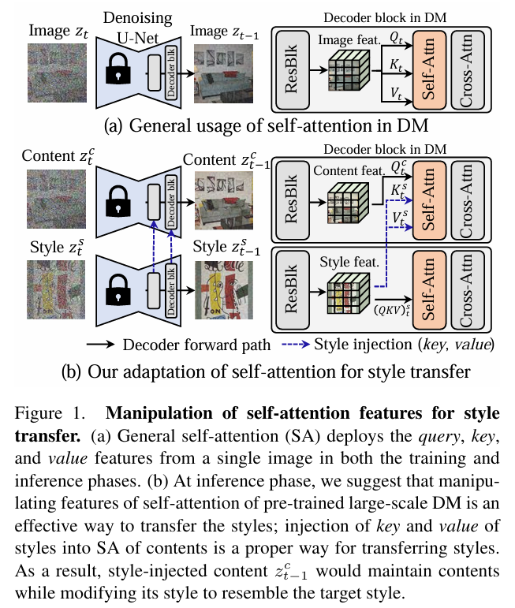 | 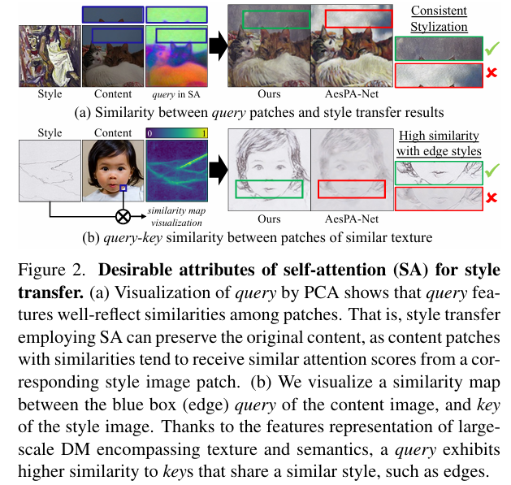 |
|---|---|
| 图 1：用于风格迁移的自注意力特征操作。(a) 一般的自注意力（SA）在训练和推理阶段都从单个图像中提取查询、键和值特征。(b) 在推理阶段，我们认为操纵预训练的大规模扩散模型（DM）的自注意力特征是一种有效的风格迁移方式；将风格的键和值注入到内容的自注意力中是进行风格迁移的恰当方法。结果，注入风格后的内容$z_{ t−1}^{c}$在修改风格以接近目标风格的同时，会保留内容。 | 图 2：自注意力机制（SA）在风格迁移中的理想属性（a）通过主成分分析（PCA）对查询进行可视化，结果表明查询特征能很好地反映图像块之间的相似性。也就是说，采用自注意力机制的风格迁移可以保留原始内容，因为相似的内容图像块往往会从相应的风格图像块中获得相似的注意力分数。（b）我们可视化了内容图像中蓝色框（边缘部分）的查询与风格图像的键之间的相似性图。由于大规模扩散模型的特征表示涵盖了纹理和语义信息，一个查询会对具有相似风格（如边缘）的键表现出更高的相似性。 |
因此，我们的方法旨在通过操纵预训练大规模扩散模型的自注意力特征，在无需任何优化的情况下将风格图像的纹理转移到内容图像上。为此，我们首先提出一种基于注意力的风格注入方法。其基本思想是将自注意力中内容的键和值替换为风格图像的键和值，尤其是解码器后半部分与局部纹理相关的层。如上文所述，通过基于相似性的注意力机制，交换后的风格能够很好地与原始图像的内容和纹理对齐。通过我们提出的风格注入方法，我们观察到局部纹理模式能够成功转移，但仍然存在一些问题，如原始内容被破坏和颜色不和谐。为了解决这些问题，我们还提出了以下技术：查询保留、注意力温度缩放和初始潜在自适应实例归一化（AdaIN）。查询保留通过在自注意力中保留内容图像的查询，使反向扩散过程能够保留原始内容的空间结构。注意力温度缩放旨在通过处理因键替换而导致的模糊自注意力图，来保持内容结构。最后，初始潜在自适应实例归一化通过调整扩散模型中初始噪声的统计信息，来纠正颜色不和谐的问题，因为风格图像的颜色分布未能正确转移。我们的主要贡献总结如下：
- 我们提出了一种风格迁移方法，通过简单操纵自注意力特征来利用大规模预训练扩散模型，在无需任何优化或监督（如文本）的情况下，将内容的键和值替换为风格的键和值。
- 我们进一步改进了简单的风格迁移方法，通过提出
查询保留、注意力温度缩放和初始潜在自适应实例归一化三个组件，使风格能够更好地适应。 - 在风格迁移数据集上的广泛实验验证了我们提出的方法显著优于先前的方法，并达到了当前最优的性能。
2. 相关工作
2.1 基于扩散模型的神经风格迁移
神经风格迁移是一种示例引导的图像生成任务，它将一幅图像的风格转移到另一幅图像上，同时保留原始图像的内容。在扩散模型领域，神经风格迁移通过利用预训练扩散模型的生成能力得到了发展。例如，InST引入了一种基于文本反转的方法，旨在将给定的风格映射到相应的文本嵌入中。StyleDiffusion旨在通过引入基于CLIP的风格解耦损失来微调扩散模型，从而实现风格和内容的解耦。此外，还有几种方法利用文本输入作为风格条件或用于确定要合成的内容。
相反，DiffStyle提出了一种无需训练的风格迁移方法，该方法利用h空间并调整跳跃连接，以分别有效地传递风格和内容信息。然而，当DiffStyle应用于Stable Diffusion时，其表现与典型的风格迁移方法有很大不同；不仅纹理发生了变化，空间布局等语义信息也发生了改变。
为了解决这些局限性，我们提出了一种新颖的算法，该算法在无需任何优化过程的情况下，在Stable Diffusion的自注意力层内和谐地融合风格和内容特征。
2.2 扩散模型中基于注意力的图像编辑
随着预训练的文本到图像扩散模型取得显著进展，出现了许多利用这些模型的图像编辑工作。值得注意的是，Prompt-to-Prompt提出了基于文本的局部图像编辑方法，通过操纵交叉注意力图来实现。具体来说，他们观察到交叉注意力在建模图像空间布局与提示中每个单词之间的关系方面起着重要作用。因此，他们用所需的单词和交叉注意力图替换原始的，从而获得符合文本条件的编辑图像。随后，Plug-and-play引入了文本引导的图像到图像转换方法。他们发现空间特征（即来自残差块的特征）和自注意力图决定了合成图像的空间布局。因此，在根据给定的文本条件生成新图像时，他们利用原始图像的特征和注意力图来引导扩散模型，以保留原始空间布局。最近，MasaCtrl提出了用于一致图像编辑的互自注意力控制方法，使用文本提示。详细来说，他们保留源图像自注意力层的键和值，同时用所需的文本提示对模型进行条件设置。
与这些工作一样，我们认识到注意力图在表示空间信息方面的潜力。然而，与上述专注于利用文本条件的方法不同，我们专注于由来自不同风格的两幅图像组成的风格和内容图像进行条件设置。通过精确调整中间表示中的统计信息，将风格和内容图像的自注意力层中的特征相结合，我们将内容图像的纹理转移到给定的风格上。
3. 背景
潜在扩散模型（Latent Diffusion Model, LDM）是一类在低维潜在空间中进行训练的扩散模型，其目的是聚焦于数据的语义信息并降低计算成本。对于给定的图像$x \in \mathbb{R}^{H×W×3}$，编码器$\varepsilon$将$x$编码为潜在表示$z \in \mathbb{R}^{h×w×c}$，解码器则从该潜在表示中重建图像。
利用预训练的编码器，LDM对数据集中的所有图像进行编码，并在潜在空间$z$上训练一个扩散模型，通过在时间步$t$从添加噪声后的潜在表示$z_t$预测噪声$\epsilon$。相应的训练目标为：
其中，$\epsilon \in N(0,1)$是噪声，$t$是从$\{1, …, T\}$中均匀采样的时间步数，$y$是条件，$\epsilon_{\theta}$是一个神经网络，用于预测添加到$z$中的噪声。
在我们的工作中，我们使用Stable Diffusion（SD），它是目前唯一公开的大规模预训练扩散模型。在SD中，$y$是文本，$\epsilon_{\theta}$采用U - Net架构，每个分辨率的模块依次包含一个残差块、一个自注意力块（SA）和一个交叉注意力块（CA）。如第1节所述，在这些模块中，我们重点关注SA块来实现风格迁移。给定残差块之后的特征$\phi$，自注意力块的计算过程如下：
其中，$d$表示投影后的查询维度，$W(.)$是投影层。需要注意的是，我们不使用任何文本条件，因此变量$y$始终为空文本提示（“”）。
4. 方法
| 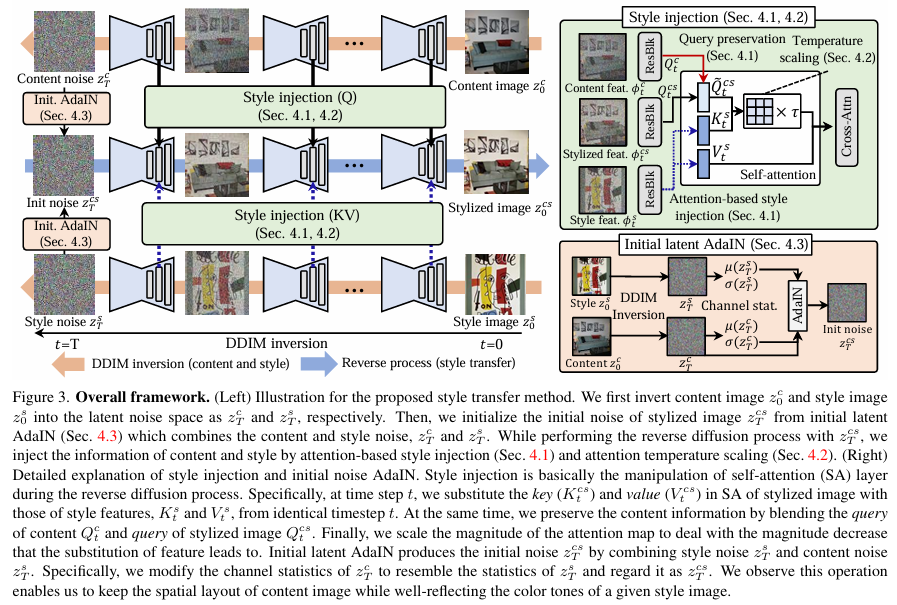 |
|---|
| 图3. 整体框架。（左）所提出的风格迁移方法示意图。我们首先将内容图像$z_{0}^{c}$和风格图像$z_{0}^{s}$分别反转到潜在噪声空间，得到$z_{T}^{c}$和$z_{T}^{s}$。然后，我们利用初始潜在自适应实例归一化（AdaIN，见4.3节）初始化风格化图像的初始噪声$z_{T}^{CS}$，该方法将内容噪声$z_{T}^{c}$和风格噪声$z_{T}^{s}$结合起来。在对$z_{T}^{CS}$进行反向扩散过程时，我们通过基于注意力的风格注入（见4.1节）和注意力温度缩放（见4.2节）来注入内容和风格信息。（右）风格注入和初始噪声AdaIN的详细解释。风格注入本质上是在反向扩散过程中对自注意力（SA）层进行操作。具体来说，在时间步t，我们将风格化图像自注意力层中的键$(K_{t}^{cs})$和值$(V_{t}^{cs})$替换为来自同一时间步t的风格特征的键$K_{t}^{s}$和值$V_{t}^{s}$。同时，我们通过融合内容的查询$Q_{t}^{c}$和风格化图像的查询$Q_{t}^{cs}$来保留内容信息。最后，我们对注意力图的幅度进行缩放，以应对因特征替换导致的幅度下降问题。初始潜在AdaIN通过结合风格噪声$z_{T}^{s}$和内容噪声$z_{T}^{c}$生成初始噪声$z_{T}^{cs}$。具体而言，我们修改$z_{T}^{c}$的通道统计信息，使其与$z_{T}^{s}$的统计信息相似，并将其视为$z_{T}^{CA}$。我们发现，这一操作能够在保留内容图像空间布局的同时，很好地反映给定风格图像的色调。 |
本文旨在借助预训练的大规模文本到图像扩散模型的生成能力，解决艺术风格迁移问题。简而言之，艺术风格迁移是将给定内容图像$I^c$的风格修改为风格图像$I^s$的风格，生成的风格化图像$I^{cs}$应保留$I^c$的语义内容，同时其风格（如纹理）来自$I^s$。为简化说明，我们省略潜在扩散模型（LDM）中自动编码器的编码和解码过程，重点从扩散过程的角度详细阐述所提出的方法。因此，在以下部分中，我们将内容图像、风格图像和风格化图像等同于其编码后的对应表示$z_0^c$、$z_0^s$和$z_0^{cs}$。
4.1 基于注意力的风格注入
我们从先前图像到图像转换方法，尤其是Prompt-to-Prompt的研究中获得启发。该方法的核心思想是在保持注意力图不变的情况下，改变交叉注意力（CA）的文本条件。由于注意力图会影响输出的空间布局，替换后的文本条件决定了生成图像中绘制的内容，而这些条件实际上就是交叉注意力中的键和值。受此启发，我们模仿交叉注意力的操作方式，对自注意力层的特征进行处理，将风格图像$I^s$的特征视为条件。具体而言，在生成过程中，我们将内容图像的键和值替换为风格图像的键和值，从而将风格图像的纹理转移到内容图像上。
为此，我们首先利用去噪扩散隐式模型（DDIM）反演获取内容图像和风格图像的潜在表示，然后在DDIM反演过程中收集风格图像的自注意力特征。 具体来说，对于预定义的时间步$t = \{0, …, T\}$，将风格图像$z_0^s$和内容图像$z_0^c$从图像（$t = 0$）反演为高斯噪声（$t = T$）。在DDIM反演过程中，我们还会收集每个时间步的内容查询特征（$Q_t^c$）以及风格的键和值特征（$K_t^s$，$V_t^s$）。
之后，我们通过复制内容潜在噪声$z_T^c$来初始化风格化潜在噪声$z_T^{cs}$。然后，在对风格化潜在表示$z_t^{cs}$进行整个反向过程时，将从风格图像收集的键$K_t^s$和值$V_t^s$注入到自注意力层中，以替代原始的键$K_t^{cs}$和值$V_t^{cs}$，从而将目标风格转移到风格化潜在表示上。然而，仅进行这种替换可能会导致内容被破坏，因为随着注意力值的变化，风格化潜在表示的内容会逐渐改变。因此，我们提出查询保留机制来维持原始内容。简单来说，在整个反向过程中，我们将风格化潜在表示的查询$Q_t^{cs}$与内容的查询$Q_t^c$进行融合。时间步$t$的风格注入和查询保留过程如下所示：
其中，$\gamma$是融合程度，取值范围为$[0, 1]$。此外，我们将这些操作应用于解码器中与局部纹理相关的后半部分层（在Stable Diffusion中为第7 - 12层解码器层）。我们还强调，所提出的方法可以通过改变查询保留比例$\gamma$来调整风格转移的程度。 具体而言，$\gamma$越高，保留的内容越多；$\gamma$越低，风格转移的效果越强。
4.2 注意力温度缩放
注意力图通过查询和键特征之间的缩放点积计算得到。在训练过程中，自注意力层中的查询和键特征来自同一图像。然而，如果我们将键特征替换为风格图像的键特征，由于风格和内容很可能不相关，相似度的整体幅度会降低。因此，计算得到的注意力图可能会变得模糊或平滑，这将进一步导致输出图像不清晰，不利于捕捉内容和风格信息。
为了量化这个问题，我们在进行基于注意力的风格注入时，测量注意力图的标准差。具体来说，我们计算应用softmax之前的注意力图，即查询和键之间的缩放点积。如图4（a）所示，我们验证了这种风格注入在整个时间步中倾向于降低注意力图的标准差。也就是说，应用风格注入后经过softmax的注意力图会过于平滑。
为了使注意力图更加清晰，我们引入了一个注意力温度缩放参数。具体而言，我们将softmax之前的注意力图乘以一个大于1的常数温度缩放参数$\tau$。这样，经过softmax后的注意力图会比原始值更加清晰。修改后的注意力计算过程如下：
我们将$\tau = 1.5$作为默认设置，这是整个时间步的平均比例。如图4（b）所示，我们证实它有效地将注意力图的标准差校准到与原始值相近的水平。
| 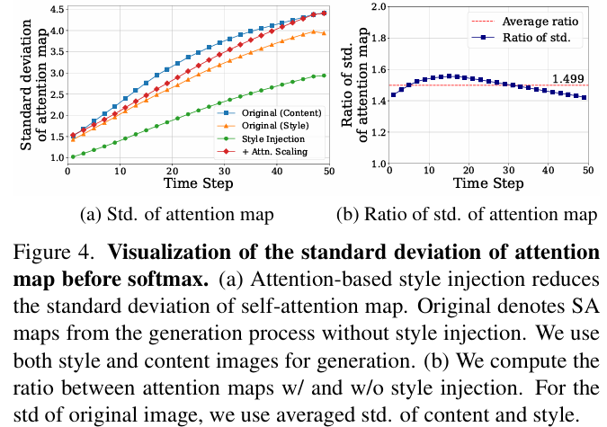 |
|---|
| 图4. 应用softmax之前注意力图标准差的可视化。(a) 基于注意力的风格注入降低了自注意力图的标准差。“Original”表示在没有风格注入的生成过程中得到的自注意力图。我们使用风格图像和内容图像进行生成。(b) 我们计算了有风格注入和无风格注入时注意力图之间的比率。对于原始图像的标准差，我们采用内容图像和风格图像标准差的平均值。 |
4.3 初始潜在自适应实例归一化（Initial Latent AdaIN）
在艺术风格迁移中，色调通常占据风格信息的重要部分。在这种情况下，我们观察到仅使用基于注意力的风格注入在捕捉给定风格的色调方面往往效果不佳。如图5（a）所示，纹理和局部图案成功转移到了内容图像上，但内容图像的色调仍然保持不变。此外，即使注入了风格的查询、键和值，生成的图像仍然保留了内容图像的色调，如图5（b）所示。
| 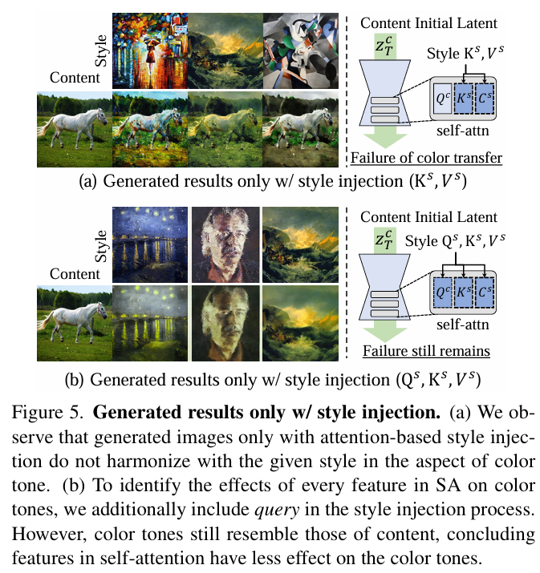 |
|---|
| 图5. 仅进行风格注入的生成结果。(a) 我们观察到，仅基于注意力进行风格注入生成的图像在色调方面与给定风格不协调。(b) 为了确定自注意力（SA）中的每个特征对色调的影响，我们在风格注入过程中额外加入了查询。然而，生成图像的色调仍然与内容图像的色调相似，这表明自注意力中的特征对色调的影响较小。 |
由于替换自注意力特征对色调的影响较小，我们分析了扩散模型的另一个关键部分：初始潜在噪声。扩散模型领域的一项最新发现是，扩散模型在合成纯黑色或纯白色图像时存在困难。相反，由于初始噪声是从均值为零、方差为1的分布中采样得到的，模型倾向于生成中等颜色的图像。因此，我们假设初始噪声的统计信息在很大程度上影响了生成图像的颜色和亮度。
基于这一假设，我们尝试在风格迁移过程中使用风格图像的初始潜在表示$z_T^s$。然而，如果我们直接从风格潜在表示$z_T^s$开始生成图像，合成结果的结构信息也会遵循风格图像，从而丢失内容图像的结构。为了充分利用两个初始潜在表示中的有价值信息，我们考虑到色调信息与初始潜在表示的通道统计信息密切相关，这遵循了风格损失和自适应实例归一化（AdaIN）的原理。因此，我们采用AdaIN来调整初始潜在表示，以实现有效的色调信息转移，具体表示为：
其中，$\mu(·)$和$\sigma(·)$分别表示通道维度上的均值和标准差。基于此，初始潜在表示$z_T^{cs}$在保留来自$z_T^c$的内容信息的同时，使通道维度上的均值和标准差与$z_T^s$对齐。
5. 实验
5.1 实验设置
我们在基于LAION数据集预训练的Stable Diffusion 1.4上进行所有实验，并采用DDIM采样，总共50个时间步（$t = \{1, …, 50\}$）。对于超参数的默认设置，如果没有特别说明，我们使用$\gamma = 0.75$和$\tau = 1.5$。
5.2 评估协议
传统的风格迁移方法通常将风格损失（Style Loss）既用作训练目标，也用作评估指标，因此其结果往往会过度拟合风格损失。为了进行公平比较，我们采用了最近提出的ArtFID指标。ArtFID在评估整体风格迁移性能时，兼顾了内容和风格的保留情况，并且被认为与人类判断高度吻合。具体来说，ArtFID的计算方式为（$ArtFID = (1 + LPIPS) \cdot (1 + FID)$）。其中，LPIPS用于衡量风格化图像与相应内容图像之间的内容保真度，FID用于评估风格化图像与相应风格图像之间的风格保真度。
- 数据集：我们的评估使用来自MSCOCO数据集的内容图像和来自WikiArt数据集的风格图像。所有输入图像均中心裁剪为512×512分辨率。此外，为了进行定量比较，我们从每个数据集中随机选择20个内容图像和40个风格图像，如同$StyTR ^{2}$所做的那样，生成800张风格化图像。
- 内容特征结构距离（CFSD）：在风格迁移评估中，内容保真度的评估通常依赖于LPIPS距离。然而，由于LPIPS使用的是在ImageNet上预训练用于分类任务的AlexNet的特征空间，该空间具有纹理偏向性。因此，图像的风格信息会影响LPIPS得分。为了减轻这种风格影响，我们额外引入了内容特征结构距离（CFSD），这是一种仅考虑图像块之间空间相关性的距离度量。
具体来说，我们首先定义图像块特征之间的相关图。对于给定的图像$I$，我们获取卷积层conv3在VGG19中的输出特征图$F \in \mathbb{R}^{hw×c}$。然后，计算块相似度图$M = F × F^{T}$，$M \in \mathbb{R}^{hw×hw}$，它表示$F$中每对特征之间的相似度图。之后，为了计算两个块相似度图之间的距离，我们通过应用softmax操作将单个块与其他块之间的相似度建模为概率分布。最后，相关图表示为$S = [softmax(M_{i})]_{i = 1}^{hw}$，$S \in \mathbb{R}^{hw×hw}$，其中$M_{i} \in \mathbb{R}^{1×hw}$是第$i$个块与其他块之间的相似度图。
然后，CFSD被定义为两个相关图之间的KL散度。在我们的实验中，计算内容图像（$S^{c}$）和风格化图像（$S^{cs}$）的相关图之间的CFSD，公式如下：
5.3 定量比较
我们通过与12种最先进的方法进行比较来评估所提出的方法，其中包括9种传统风格迁移方法（AesPA-Net、CAST、$StyTR ^{2}$、EFDM、MAST、AdaAttN、ArtFlow、AdaConv、AdaIN）和3种基于扩散的风格迁移方法（DiffuseIT、InST、DiffStyle），这些方法都以风格图像作为输入。我们使用所有基线方法的公开实现，并采用其推荐的配置。
- 与传统风格迁移方法比较：如表1所示，在ArtFID指标上，我们的方法大幅超越传统风格迁移方法，该指标与人类偏好相符。此外，我们的方法获得了最低的FID值，这表明风格化图像与目标风格高度相似。在内容保真度指标方面，我们的方法在CFSD和LPIPS上均表现出色。需要指出的是，与其他方法相比，我们的方法在CFSD指标上得分低很多，CFSD是仅考虑空间相关性的指标。
此外，我们还强调，所提出的方法可以通过改变$\gamma$任意调整风格迁移的程度。当我们匹配LPIPS（内容）的值时，我们的方法在FID（风格）方面显著超越所有其他方法（图10）。
| 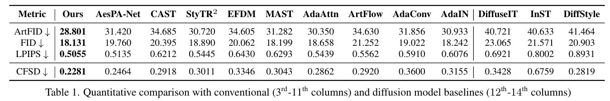 |
|---|
| 表1. 与传统方法（第3 - 11列）和基于扩散模型的基线方法（第12 - 14列）的定量比较 |
| 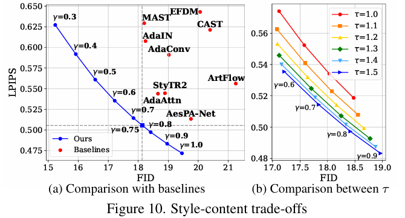 |
|---|
| 图10. 风格与内容的权衡 |
- 与基于扩散的风格迁移方法比较：如表1所示，在LPIPS、FID及其组合（ArtFID）方面，我们的方法展现出最佳性能，优势明显。对于扩散模型而言，运行时间是一个重要因素，因为它们合成单张图像需要多个步骤，不可避免地会消耗时间。因此，我们在单个TITAN RTX GPU上测量了一对内容和风格图像的推理时间，如表2所示。我们的方法总共需要12.4秒，其中DDIM反演耗时8.2秒，采样耗时4.2秒。结果表明，即使使用大规模扩散模型，我们的方法也明显比其他方法更快。这种更快的速度源于我们的方法在DDIM反演时可以使用更少的步骤，因为我们额外利用了反演步骤中收集的特征，大大降低了对内容和风格进行完美反演的必要性。
| 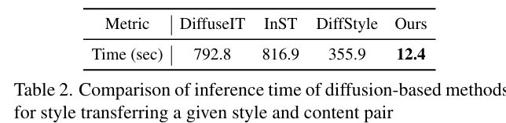 |
|---|
| 表2. 基于扩散模型的方法在对给定风格-内容图像对进行风格迁移时的推理时间比较 |
5.4 定性比较
- 与传统风格迁移方法比较：如图6所示，我们发现我们的方法在很好地保留内容图像结构信息的同时，还能有效地迁移风格。例如，在第三行中，我们的方法保留了桥梁的结构，而基线方法在保留结构或迁移风格方面表现不佳。我们在图7及补充材料中还提供了带放大细节的定性比较。
| 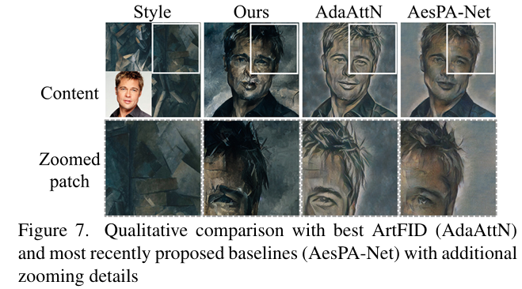 |
|---|
| 图7. 与具有最佳ArtFID值的方法（AdaAttN）和最新提出的基线方法（AesPA-Net）进行定性比较，并提供了额外的放大细节。 |
- 与基于扩散的风格迁移方法比较：我们还将我们的方法与最近的基于扩散的风格迁移基线方法进行了比较。如图6所示，我们观察到所提出的技术能够很好地将风格迁移到内容上。另一方面，当给定任意内容 - 风格对时，基线方法常常会丢失内容的结构或无法成功迁移风格。例如，DiffuseIT和DiffStyle在生成形状合理且视觉效果好的图像方面存在困难，或者会丢失原始内容。不同的是，InST虽然能合成逼真的图像，但在迁移风格（第一行）或改变图像内容（第二、三行）方面存在困难。
| 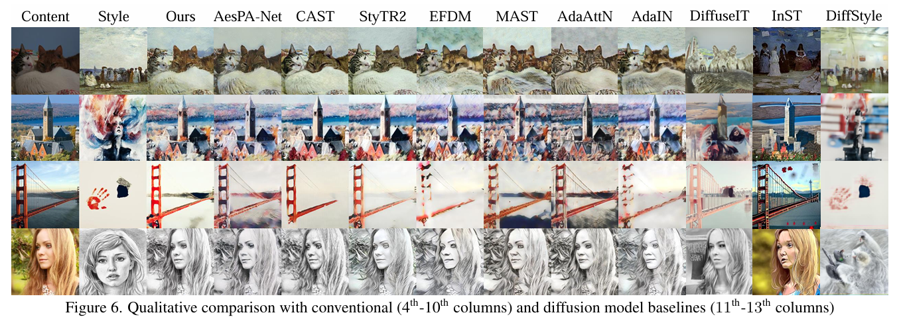 |
|---|
| 图6. 与传统方法（第4 - 10列）和基于扩散模型的基线方法（第11 - 13列）的定性比较 |
5.5 消融研究
为了验证所提出组件的有效性，我们从定量和定性两个方面进行了消融研究。如图8和表3所示，风格注入对于引导给定图像的风格和内容至关重要（配置B）。此外，初始潜在AdaIN在转移风格色调方面起着重要作用（配置D）。注意力温度缩放负责提高合成结果的质量，例如锐化细节和解决模糊问题。例如，这种缩放同时降低了FID和LPIPS（表3中配置$A^{*}$与C的对比）。为了进行更详细的分析，我们在图10（b）中展示了在改变注意力缩放参数$\tau$时，风格 - 内容权衡的定量指标。结果表明，注意力缩放有效地降低了FID和LPIPS，证明了其在内容保留和风格迁移能力方面的作用（$\tau = 1.0$与$\tau = 1.5$对比）。
| 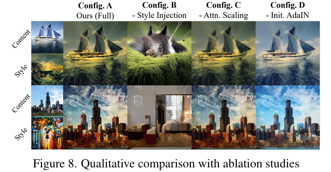 | 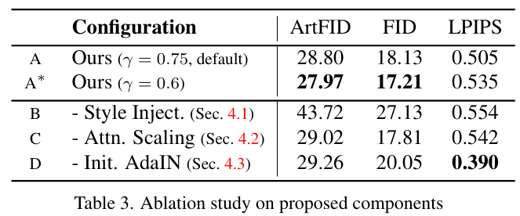 |
|---|---|
| 图8. 消融研究的定性比较 | 表3. 对所提组件的消融研究 |
5.6 额外分析
- 内容 - 风格权衡：如4.1节所述，我们提出的方法通过调整参数$\gamma$，可以灵活控制内容保真度和风格保真度之间的权衡关系。具体来说，我们在$\gamma$取值范围为$[0.3, 1]$内，以0.1为步长变化时，计算FID和LPIPS。如图10（a）所示，在所有内容和风格保真度范围内，我们的方法都超越了基线方法。这一结果表明，当我们通过调整我们方法的$\gamma$，使风格或内容指标与对比模型相匹配时，我们的方法明显优于其他方法。需要注意的是，图中的虚线表示表1中我们模型的结果。
我们还通过调整$\gamma$合成图像，以可视化内容 - 风格权衡的效果。如图9所示，$\gamma$越低，生成图像反映风格的程度越高，但会丢失给定图像的内容，反之亦然。我们方法的这一特性意味着用户可以根据个人喜好调整风格程度。
| 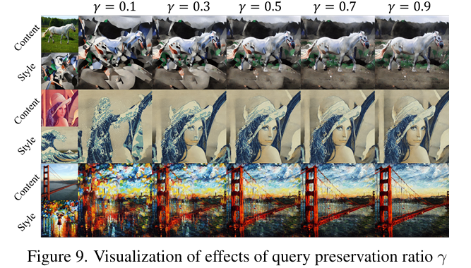 |
|---|
| 图9. 查询保留率γ的效果可视化 |
- $\tau$值的研究：我们观察到，随着$\tau$逐渐增大，风格迁移的性能逐渐提升，尽管当$\tau$较大时，其提升效果逐渐变小，如图10（b）所示。这一结果表明，注意力温度缩放通过简单调整注意力图的幅度，能够有效地发挥作用。
- 与文本引导的风格迁移比较：我们额外将所提出的方法与基于文本输入的风格迁移方法进行了比较。由于文本引导的方法倾向于大幅修改风格，在本次实验中我们将$\gamma$设为0.3。由于文本条件很难包含风格图像中的所有信息，如纹理和色调，文本引导方法的迁移结果与目标风格的相似度较低，如图11所示。相比之下，我们验证了所提出的方法能够以高保真度成功迁移风格。
| 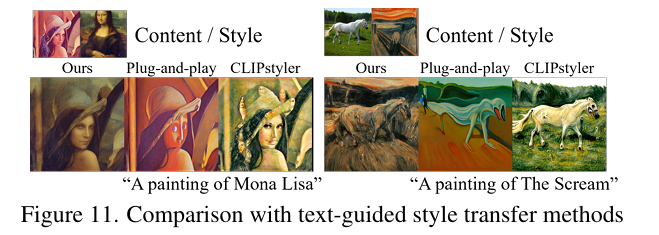 |
|---|
| 图11. 与文本引导的风格迁移方法的比较 |
6. 结论
我们的工作解决了基于扩散模型的风格迁移方法所面临的挑战，这些方法通常需要耗时的优化步骤，且难以充分利用大规模扩散模型的生成潜力。为此，我们提出了一种无需训练的方法，用于在风格迁移中适配预训练的大规模扩散模型。我们的方法主要通过模仿交叉注意力机制，在内容生成过程中，将自注意力层的键和值替换为风格图像的对应特征。此外，我们提出了查询保留和注意力温度缩放机制，以缓解内容被破坏的问题，并利用初始潜在自适应实例归一化（AdaIN）处理颜色不协调（风格颜色转移失败）的问题。实验结果表明，与以往基线中的最先进技术相比，我们提出的方法具有显著优势。
致谢
这项工作部分得到了韩国科学技术信息通信部（MSIT）/韩国信息技术振兴院（IITP）（编号：2022 - 0 - 00680、2019 - 0 - 00421、2020 - 0 - 01821、2021 - 002068），以及韩国科学技术信息通信部和韩国国家警察厅（MSIT&KNPA）/韩国知识产权战略推进院（KIPoT）（警察实验室2.0，编号：210121M06）的支持。
7. 附录
- 颜色转移能力的消融研究：为了验证消融方法在颜色转移方面的有效性，我们采用了HistoGAN中提出的RGB-uv直方图来衡量颜色转移能力。具体来说，对于给定的输入图像$I$，我们将其转换到对数色度空间。例如，选择红色（R）颜色通道作为主通道，并通过绿色（G）和蓝色（B）通道进行归一化，得到：其中，$I_{R}$、$I_{G}$、$I_{B}$分别是图像$I$的颜色通道，$\epsilon$是一个用于数值稳定性的小常数，$x$是像素索引。
然后，计算强度$I_{y}(x)=\sqrt{I_{R}^{2}(x)+I_{G}^{2}(x)+I_{B}^{2}(x)}$用于加权缩放，并对直方图进行微分。最终的直方图表示为：
其中，$I_{uG}$、$I_{vG}$、$I_{uB}$、$I_{vB}$是与公式（8）类似投影到对数色度空间的绿色和蓝色通道，$c \in \{R, G, B\}$，$k(·)$是一个逆二次核函数。
我们使用直方图损失（Histogram Loss）作为颜色相似度度量，它衡量了风格化图像和风格图像的直方图之间的Hellinger距离：
其中，$H_{cs}$和$H_{s}$分别是风格化图像和风格图像的颜色直方图，$|\cdot|$是标准欧几里得范数，$H^{\frac{1}{2}}$表示元素级的平方根。我们采用HistoGAN的默认配置。关于直方图损失的详细描述，请参考原始的HistoGAN论文。
结果表明，我们评估了初始潜在自适应实例归一化（Initial Latent AdaIN）在色调转移方面的有效性。在表4中，每个提出的组件都有助于转移给定风格图像的色调。特别是，我们证实初始潜在自适应实例归一化对色调转移有显著影响。
| 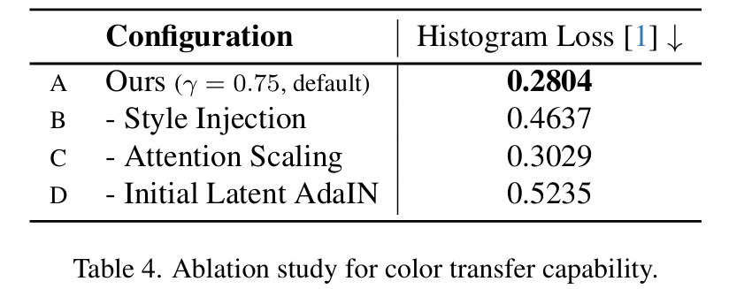 | 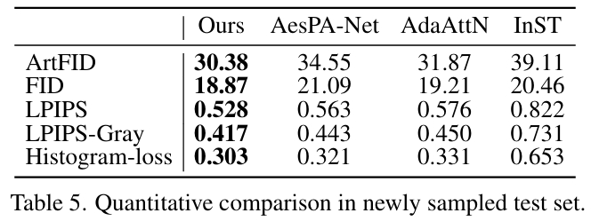 |
|---|---|
| 表4. 颜色转移能力的消融研究。 | 表5. 在新采样测试集上的定量比较。 |
- 注意力温度缩放消融的定性比较：为了突出注意力温度缩放的效果，我们提供了一些在消融注意力缩放时的风格转移结果示例。如图12所示，我们验证了注意力缩放使模型能够合成清晰的图像，并很好地保留给定风格图像中的图案（例如左边示例中的星星）。这一实验结果证实了所提出的注意力温度缩放方法的重要性。请注意，在本实验中我们使用$\gamma = 0.3$，以在可视化中保持较强的风格转移效果。
- 其他数据集上的定量比较：在表5中，我们对一组新的风格-内容对（20个内容，40个风格）进行了定量实验，这些图像是随机采样的，与原始图像没有任何重叠。结果显示，所提方法的性能提升仍然显著，这证实了超参数具有良好的泛化性。LPIPS基于CNN特征，会受到纹理和颜色的影响。为了独立评估内容和颜色，我们在补充材料中针对近期表现最佳且ArtFID最低的基线方法（AesPA-Net、InST、AdaAttN）测量了LPIPS灰度值和直方图损失。如表5所示，我们的方法在LPIPS灰度值上最低，在颜色相似度上最高。
- 查询保留特征空间分析：图13可视化了一对风格-内容图像的$Q_{t}^{c}$、$Q_{t}^{s}$、$Q_{t}^{cs}$和$\tilde{Q}_{t}^{cs}$的特征。可以看到，插值后的特征（$\tilde{Q}_{t}^{cs}$）位于内容附近的分布中，因为我们在整个反向过程中逐渐融合了内容查询（$Q_{t}^{c}$）和风格化查询（$Q_{t}^{cs}$）。
| 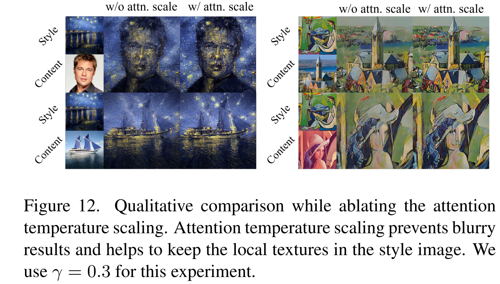 | 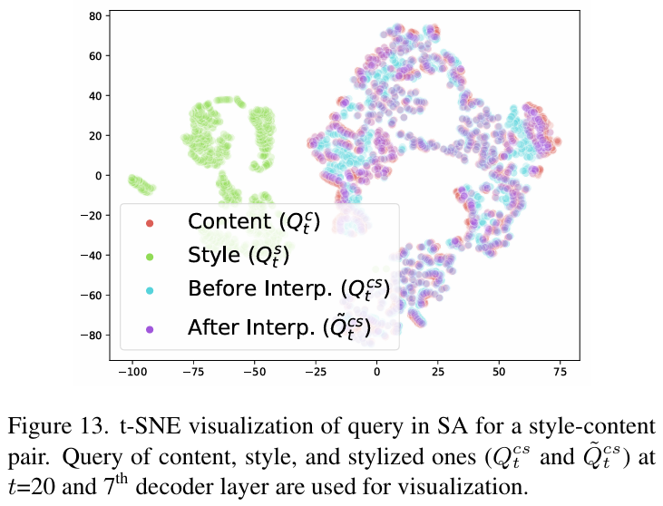 |
|---|---|
| 图12. 注意力温度缩放消融时的定性比较。注意力温度缩放可防止结果模糊，并有助于保留风格图像中的局部纹理。本实验中我们使用的$\gamma$值为0.3。 | 图13. 针对一对风格-内容图像，自注意力机制（SA）中查询的t-SNE可视化。内容、风格以及风格化图像的查询（$Q_{t}^{cs}$和$\bar{Q}_{t}^{cs}$，在$t = 20$时刻且取自第7个解码器层）用于可视化。 |
此外，我们计算了$\tilde{Q}_{t}^{cs}$到（内容、风格、自身）中前5个最近邻（NNs）的平均距离，以及在所有注入层中$t = [10, 20, 30, 40]$时最近邻中这些特征的数量。距离和最近邻数量分别为$(5.49, 9.06, 4.43)$、$(1.24, 0.00, 3.76)$，这表明$\tilde{Q}_{t}^{cs}$位于内容附近的分布中。
- 使用文本提示的风格转移：在本段落中，我们利用由BLIP获得的文本提示，而不是空文本标记，用于DDIM反演。使用官方存储库中“data vis”的图像，这些图像大多由单个对象组成，容易添加字幕。结果如表6所示，使用文本提示的我们的方法略有改进。
- 用户研究：我们将我们的方法与最新的传统方法AesPA-Net和基于扩散的方法InST进行比较，邀请18位用户参与，每位用户评估10个示例。我们观察到，分别有（57.2%，76.7%）的用户更喜欢我们提出的方法，而非（AesPA-Net，InST）。需要注意的是，我们的方法推理速度比InST快得多。
- 与StyleDiffusion的定性比较：由于StyleDiffusion的实现不可用，我们将我们的方法与StyleDiffusion补充材料中的示例进行比较。我们从其基线方法的存储库中获取StyleDiffusion的风格-内容对。我们观察到，我们的方法更适合转移局部纹理，而StyleDiffusion则倾向于显著改变图像的结构，如图15所示。我们推测，在CLIP语义丰富的特征空间中优化风格，使得StyleDiffusion以这种方式进行训练。
- 更多定性结果：我们进一步将所提方法与最新的基线方法（AesPA-Net）和ArtFID最低的基线方法（AdaAttN）进行比较。图14展示了我们的方法与基于扩散模型的基线方法的更多定性比较。此外，如图16、17所示，我们观察到我们的方法能更好地将给定风格的局部纹理转移到内容图像中。
| 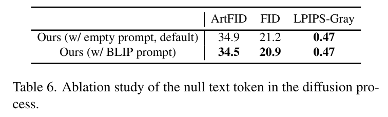 |
|---|
| 表6. 扩散过程中空白文本令牌的消融研究。 |
| 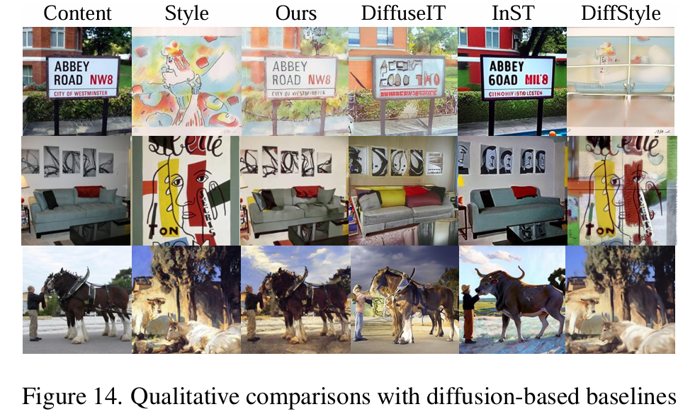 | 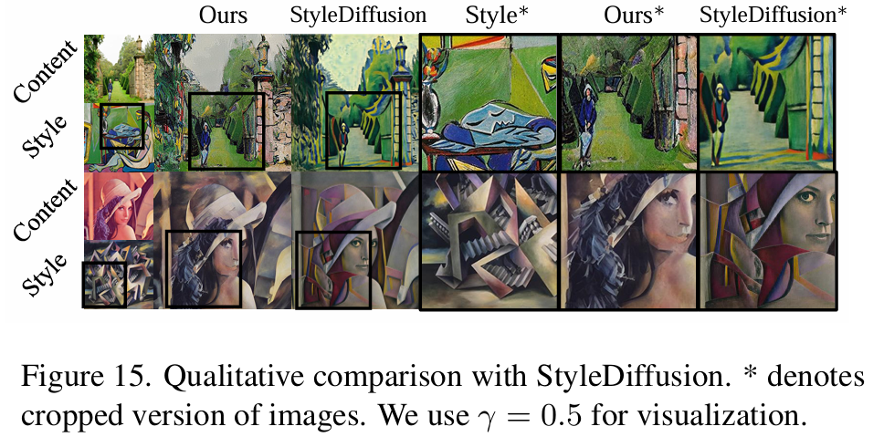 |
|---|---|
| 图14. 与基于扩散模型的基线方法的定性比较 | 图15. 与StyleDiffusion的定性比较。$\ast$表示图像的裁剪版本。我们在可视化时使用$\gamma = 0.5$。 |
| 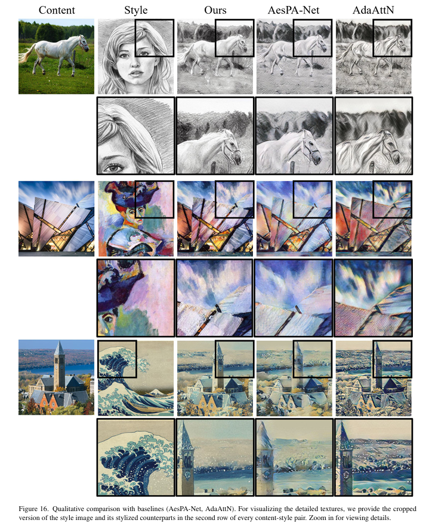 | 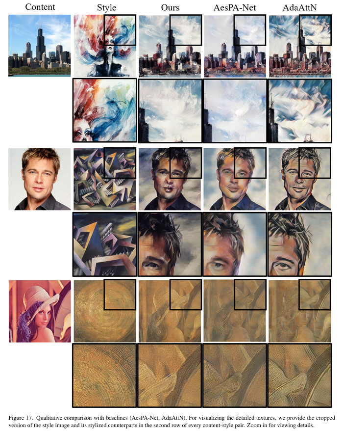 |
|---|---|
| 图 16：与基线方法（AesPA-Net，AdaAttN）的定性比较。为了可视化详细纹理，我们在每对内容 - 风格图像的第二行提供了风格图像及其风格化对应图像的裁剪版本。放大可查看细节。 | 图 17：与基线方法（AesPA-Net，AdaAttN）的定性比较。为了可视化详细纹理，我们在每对内容 - 风格图像的第二行提供了风格图像及其风格化对应图像的裁剪版本。放大可查看细节。 |
同样，在图18、19中，我们可视化了各种内容和风格图像对的风格转移结果。
| 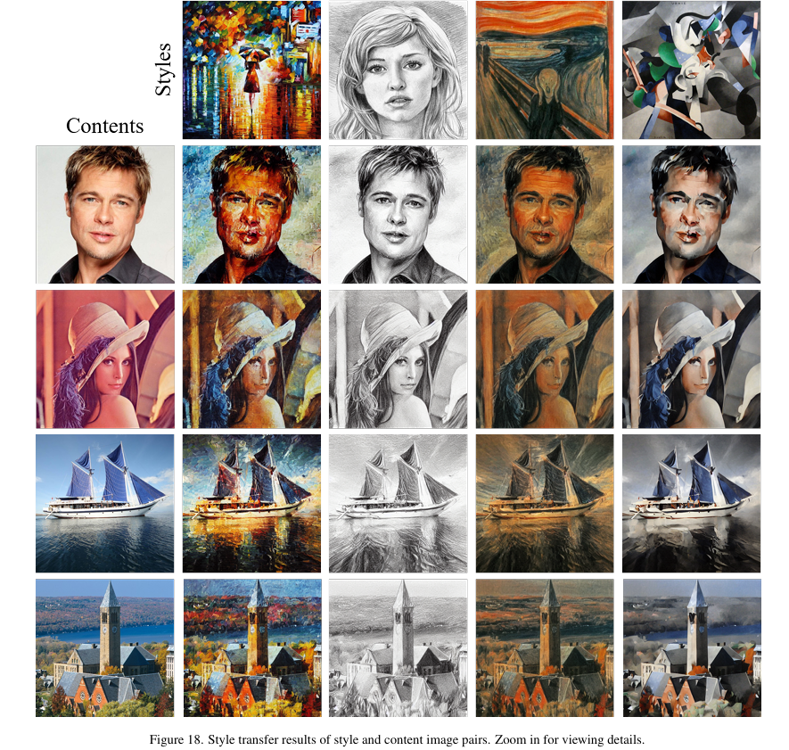 | 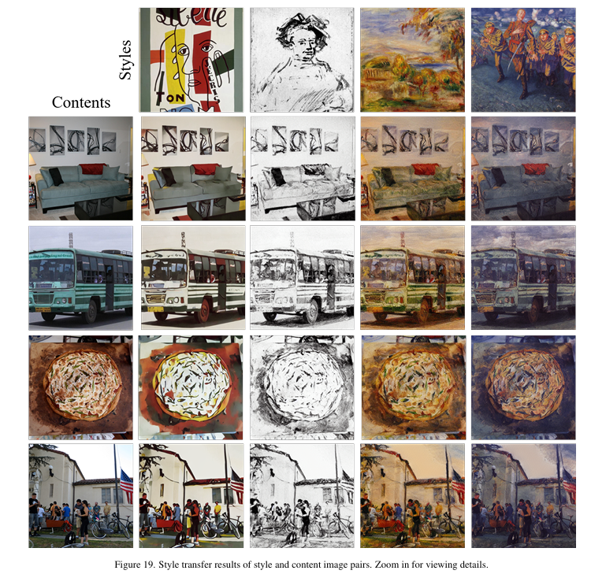 |
|---|---|
| 图 18：风格和内容图像对的风格转移结果。放大可查看细节。 | 图 19：风格和内容图像对的风格转移结果。放大可查看细节。 |
文章总结
这篇论文发表于2024-CVPR，主要提出了一种基于预训练大规模扩散模型的无需任何优化过程的新型艺术风格迁移方法。具体而言，我们通过模仿交叉注意力机制的工作方式，对自注意力层的特征进行操作：在生成过程中，将内容的键（key）和值（value）替换为风格图像的对应特征。
创新点与主要思想
本文的创新点与主要思想主要集中在method章节
- 基于注意力的风格注入
- 注意力温度缩放
- 初始潜在自适应实例归一化（Initial Latent AdaIN）
损失函数与模型训练
这篇文章使用的是预训练的Stable Diffusion模型，因此无需训练和设计损失函数。
不足之处
- 对特定模型的依赖：依赖于大规模预训练的扩散模型，例如文章中使用的 Stable Diffusion 模型。
- 超参数调整的复杂性：方法中包含多个超参数，如查询保留率γ和注意力温度缩放参数τ 。这些超参数的调整会影响风格迁移的结果，不同的图像对可能需要不同的超参数设置才能达到最佳效果。
- 潜在的语义和结构偏差：在风格迁移过程中，虽然方法旨在保留内容的语义和结构，但在某些情况下，风格的注入仍可能对内容的语义和结构产生细微影响，导致生成的图像与原始内容在语义和结构上不完全一致。